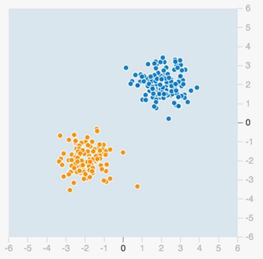

With traditional software, a programmer would have to code every single instruction the computer would need to execute to solve the problem.
What makes machine learning different is that it is a type of program that can learn and improve on their own by training with data.
This means that AI programs can make sense of large and abstract datasets in ways that a programmer would never be able to through coding rigid instructions.
数据组
Data Groups
蓝色和橙色点表示不同的数据组
The blue and orange dots represent different groups of data.
以之后的汽车保险行业实例为例，橙色点代表高风险的驾驶案例，蓝色代表低风险的驾驶案例。
We could take an example from the auto insurance industry and say that in this case the orange dots represent high risk drivers and the blue represent low risk drivers.
我们来看一个“分类”的问题
Now let’s look at a Classification problem:
这个问题的目的是将数据按适当的组进行分类
The goal of this problem is to classify data by its appropriate group.

先试一下
Dive In
尝试通过按下播放按钮训练这个机器学习的神经网络模型
Try training this model yourself by pressing the play button to the right.
To understand the results, it is important that we know the role of the key components:
Input layer: The boxes at the far left represent the input layer. This is where data points representing a set of “features” such as gender, age for example, enter the model.
Hidden layers: To be considered “deep learning” a machine learning model should contain multiple hidden layers made up of neurons. Additional layers and neurons add complexity.
Output layer: The output layer gives us our desired result. If you look at the visualization, you will see blue and orange colored areas separated by white borders. If a region is colored orange, the model predicts that data points falling within that region will belong to that category (high risk drivers in our example). The darker the color, the more confident the model is. White borderline shows regions of low confidence in either direction.
As you can see, the AI model was able to train easily for this simple classification problem, but a programmer would not have had much difficulty hard coding instructions to reach the same result.
复杂数据分类： 螺旋状点集
Spiral Datasets
但是，我们来看看一个更复杂的数据集，比如这个螺旋线
However, let’s take a look at a more complex dataset such as this spiral.
使用传统编程方法解决这类复杂分类问题，即便可能，也会困难和耗时很多。
Hard coding specific instructions to make sense of this dataset would be time consuming and difficult, if possible at all, through traditional programming.
Normally, by adjusting our AI model by adding extra “neurons” and/or layers, it can make the output more accuracy with the tradeoff of increasing the network’s complexity. But it may also cause “overfitting” problem.
Try it yourself.
Click here to rearrange the machine learning model (notice what features changed) and see what happens when you press play. (training might take a couple minutes)
Did you notice how the orange and blue regions slowly adjusted so that they would contain their category of data? This is how model works. Remember, the darker the orange or blue color of an area, the more confident the model is that a newly input datapoint that falls in that area will belong to that category.
Now that we’ve seen what machine learning can do with complex datasets, let’s take a look at a real-world use case by AXA, a large global insurance company.
AXA’s R&D team in Japan had been trying to develop a statistical model to predict which drivers were at high risk of causing a large-loss accident during their insurance period.
With the team’s best efforts, the best prediction accuracy they could achieve was less than 40%, which was insufficient for business use.
With this unsolved challenge, AXA’s R&D team turned to a experimental deep learning AI
model.
With this new method of machine learning, AXA was able to achieve 78% accuracy in its predictions. A major breakthrough.
To do this, AXA’s team determined 70 input data features they would use to train their model. Having the appropriate level of subject matter expertise is critical when selecting appropriate input data.
This predictive power could give AXA a significant advantage for optimizing insurance cost and pricing, in addition to the possibility of creating new insurance services such as real-time pricing at the point of sale.
As businesses continue to use increasingly complex or even real-time data sets, they quickly surpass the ability of programmers to effectively code detailed instructions for the models.
AI makes use of there “big data” sets with their complex correlations viable in ways they weren’t previously possible.